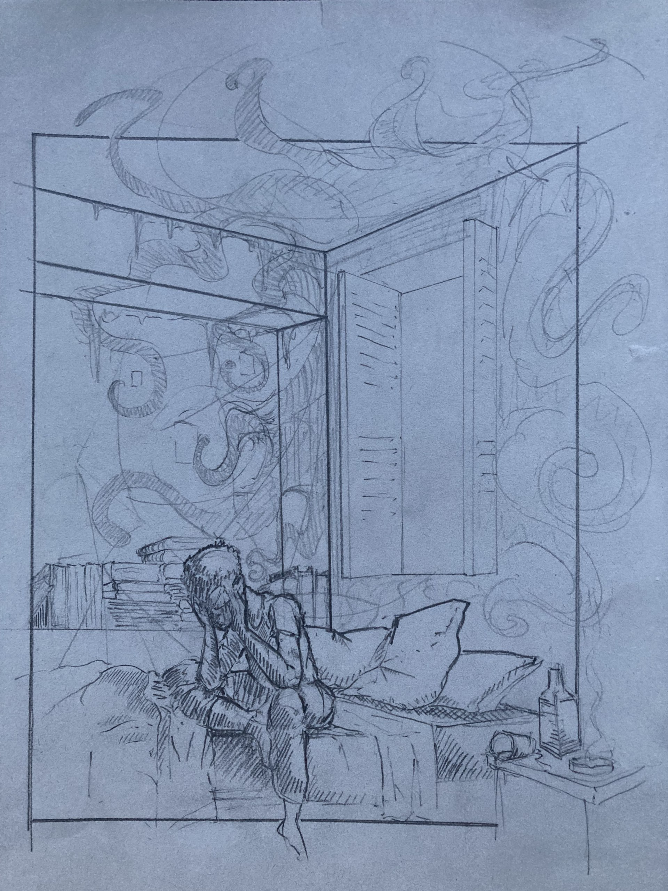

просыпаться с мыслью
svegliarsi con il pensiero
waking up with the thought

каждый день просыпаться с мыслью,
что все бы могло получиться иначе.
наждачкой я вытру лицо вместо хлопка,
а зубы почищу не пастой, а хлоркой.
мерцанье забытых в безделье эмоций,
вопросы пропащих в кармане записок,
закладки оставленных где-то набросков,
которые мог бы начать и не бросить.
всегда все могло получиться иначе,
и горечь несбывшегося мало что скрасит.
останутся в прошлое двери открыты,
пока не порвутся чуть зримые нити.
пока не забудутся старые клятвы,
не схлопнутся думы, не сдавят в объятиях.
всегда все могло получиться иначе,
исход перемелет фигуры из plasticа.
svegliarsi ogni giorno con il pensiero
che tutto poteva andare diversamente.
mi sfrego il viso con carta vetrata, non cotone,
e lavo i denti con candeggina, non dentifricio.
bagliore di emozioni perse nell’inerzia,
domande di appunti svaniti in tasca,
segnalibri di bozze lasciate altrove,
che avrei potuto iniziare e non mollare.
sempre tutto poteva andare diversamente,
e l’amaro del mancato poco lo allevia.
restano aperte le porte sul passato,
finché i fili sottili non si spezzano.
finché i vecchi giuramenti non svaniscono,
i pensieri implodono, gli abbracci stritolano.
sempre tutto poteva andare diversamente,
ma l’esito macina le figure di plastica.
waking up every day with the thought,
that everything could have turned out differently.
I’ll scrub my face with sandpaper, not cotton,
and brush my teeth with bleach, not paste.
the glimmer of emotions lost to idleness,
the questions of notes gone missing in pockets,
bookmarks in drafts left somewhere behind,
the ones I could have started and never quit.
everything could have always turned out differently,
and the bitterness of the unfulfilled will find no cure.
the doors to the past will remain wide open
until the barely visible threads finally snap.
until the old oaths are forgotten,
thoughts collapse, and embraces crush you.
everything could have always turned out differently,
the Outcome will grind the plastic figures.